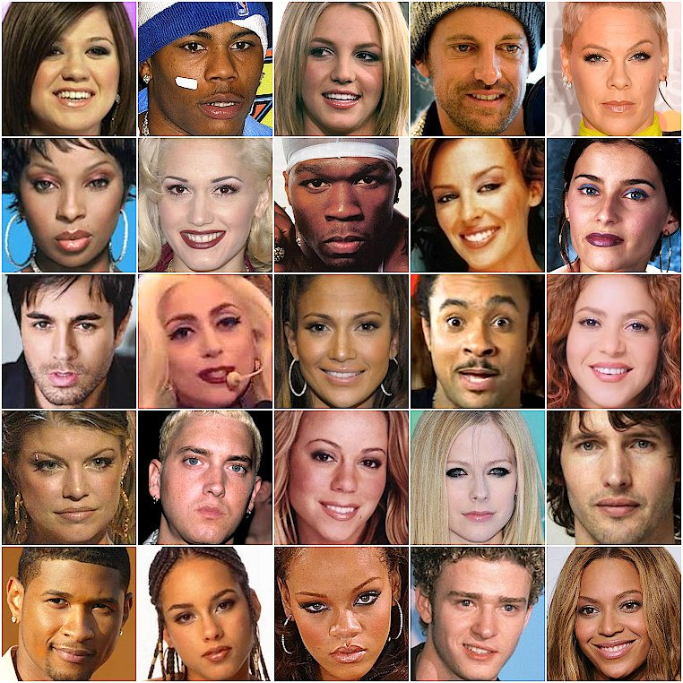

Music from Y2K
The early 2000s (2000-2003) consisted of rap and various forms of rock and metal music. Many boy bands and girl groups that formed in the mid to late 1990s also continued to make hits in the early 2000s. If you listened to pop in the early 2000s, you probably remember many of these songs as well as the artists. Popular artists include Alicia Keys, Blink-182, Britney Spears, Christina Aguilera, Coldplay, Eminem, Destiny's Child, Jennifer Lopez, Linkin Park, Madonna, Missy Elliott, NSYNC, and Red Hot Chili Peppers.
Genres like pop, pop rock, emo rock, and rap were popular in the years 2004-2006. Some bands such as *NSYNC disbanded, which led to their members releasing solo singles. If you listened to pop in the mid-2000s, you probably remember many of these songs as well as the artists. Popular artists include Avril Lavigne, Beyoncé, Blink-182, Britney Spears, Christina Aguilera, Eminem, Justin Timberlake, Linkin Park, Maroon 5, My Chemical Romance, Outkast, and Panic! at the Disco.
Dance numbers started becoming popular in the late 2000s. Some artists that made hits in the 2010s also debuted between the years 2007 and 2009, while some artists from the early 2000s still continued to make hits. If you listened to pop in the late 2000s, you probably remember many of these songs as well as the artists. Popular artists include Beyoncé, Coldplay, Soulja Boy, The Jonas Brothers, Justin Bieber, Justin Timberlake, Lady Gaga, Maroon 5, Miley Cyrus, Paramore, P!nk, Rihanna, and Taylor Swift.

Fashion
The fashion trends of the late 90s and early 2000s were baggy jeans, denim, cargo pants, crop tops, platform shoes, tracksuits, and leather. These pieces evoke a huge sense of nostalgia for many who grew up then.
FashionMusic
The music of the late 90s and early 2000s, ranging from pop, hip-hop, r&b, and to alternative rock etc. holds a very special place in the hearts of those of us who grew up during that time of quality music.
MusicTechnology
Nostalgia for gadgets and electronics from the late 90s and early 2000s, such as flip phones, dial-up internet, bulky CRT monitors, and early video game consoles like the Nintendo 64 and PlayStation.
Technology